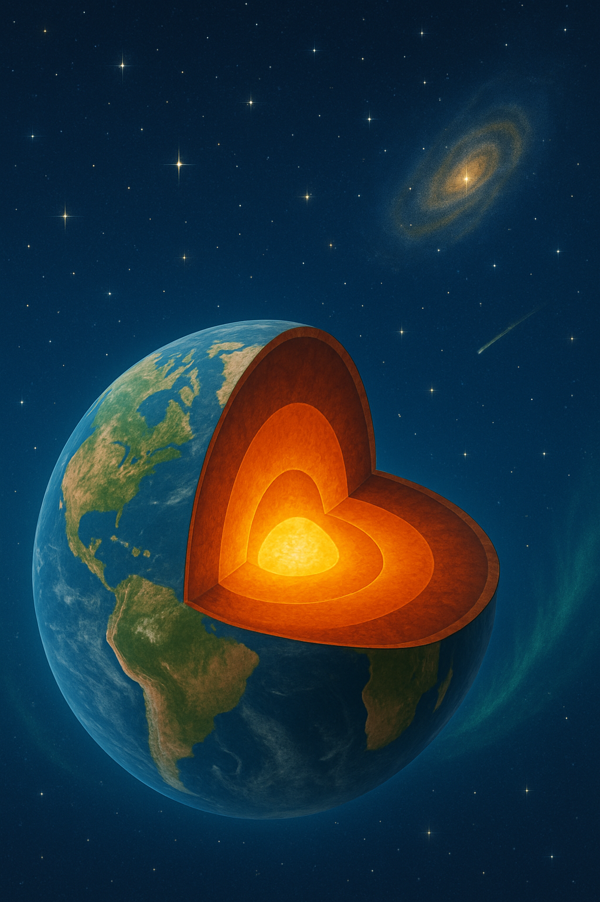
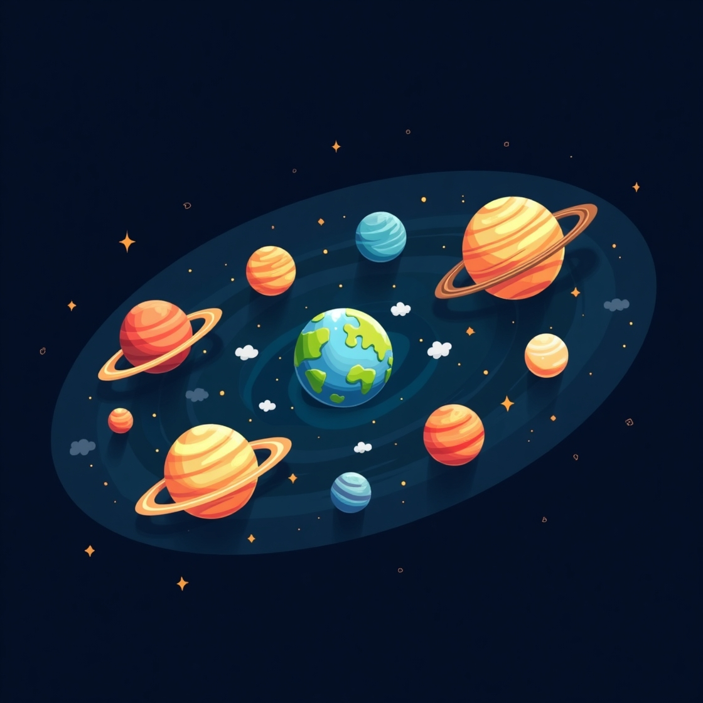

โลก (Earth) เป็นดาวเคราะห์เพียงดวงเดียวที่รู้จักว่ามีสิ่งมีชีวิตอาศัยอยู่ โครงสร้างภายในของโลกประกอบด้วยชั้นต่าง ๆ ที่มีองค์ประกอบและสมบัติเฉพาะตัวซึ่งมีผลต่อการเกิดปรากฏการณ์ทางธรณีวิทยาต่าง ๆ เช่น แผ่นดินไหว ภูเขาไฟระเบิด และการเคลื่อนที่ของทวีปต่าง ๆ บนพื้นโลก
โลกมีโครงสร้างแบ่งออกเป็น 4 ชั้นหลัก ดังนี้:
• เปลือกโลก (Crust): เป็นชั้นที่อยู่บนสุดของโลก มีความหนาเพียงประมาณ 5-70 กิโลเมตร แบ่งออกเป็นเปลือกโลกทวีป (continental crust) และเปลือกโลกมหาสมุทร (oceanic crust) เปลือกโลกเป็นชั้นที่มนุษย์อาศัยอยู่และทำกิจกรรมต่าง ๆ
• แมนเทิล (Mantle): อยู่ถัดจากเปลือกโลกลงมา มีความหนาประมาณ 2,900 กิโลเมตร แบ่งออกเป็นแมนเทิลชั้นบนและชั้นล่าง ประกอบด้วยหินร้อนหนืด (magma) และมีการพาความร้อนแบบพาความร้อน (convection currents) ซึ่งเป็นแรงขับเคลื่อนของแผ่นเปลือกโลก
• แก่นโลกชั้นนอก (Outer Core): เป็นของเหลวที่ประกอบด้วยโลหะ เช่น เหล็กและนิกเกิล มีความหนาประมาณ 2,200 กิโลเมตร การหมุนเวียนของของเหลวในชั้นนี้มีผลต่อการเกิดสนามแม่เหล็กของโลก
• แก่นโลกชั้นใน (Inner Core): เป็นของแข็งเนื่องจากความดันมหาศาล ประกอบด้วยเหล็กและนิกเกิลเช่นเดียวกับแก่นโลกชั้นนอก แต่มีอุณหภูมิสูงถึงประมาณ 5,000 – 6,000 องศาเซลเซียส
โลกไม่ได้เป็นชั้นแข็งเดียวทั้งใบ แต่แบ่งออกเป็นแผ่นเปลือกโลก (tectonic plates) หลายแผ่นที่ลอยอยู่บนแมนเทิลชั้นบน การเคลื่อนที่ของแผ่นเปลือกโลกก่อให้เกิดปรากฏการณ์สำคัญ เช่น:
• แผ่นดินไหว: เกิดจากการสะสมและปลดปล่อยพลังงานเมื่อแผ่นเปลือกโลกเคลื่อนตัวอย่างรวดเร็ว
• ภูเขาไฟระเบิด: เกิดเมื่อแมกมาเคลื่อนตัวขึ้นจากแมนเทิลผ่านรอยแยกในเปลือกโลก
• การเกิดเทือกเขา: เมื่อแผ่นเปลือกโลกชนกัน ทำให้เกิดการยกตัวเป็นเทือกเขาสูง
